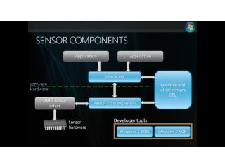

Channel 9 Blog for Yochay Kiriaty
Introduction to Project Hilo[WMV] [0:25:25] [2010/07/27]Project “Hilo” is a series of articles and sample applications that demonstrate how you can leverage the power of Windows 7, Visual Studio 2010 and Visual C++ to build high performance,…
Behind Windows Phone Tools for Developers The Emulator[WMV] [0:44:13] [2010/05/13]
While Silverlight and XNA Framework enable developers to create new and innovative applications and games for the Windows Phone (WP), these are just sets of libraries. In order to complete the…
Windows Phone 7 Design[WMV] [0:28:13] [2010/05/08]$0Windows Phone 7 constitutes a dramatic new user experience paradigm. The Metro UI design language and the Windows Phone UI design together promote seamless interactions and great end user…
Windows Phone Push Notification[WMV] [0:34:45] [2010/05/06]
Windows Phone Push Notification Service provides developers with the infrastructure to support sending notification messages to a Windows Phone device even when their applications are not running,…
Windows Phone Application Life Cycle[WMV] [0:37:19] [2010/05/04]
Windows Phone 7 provides developers with two main frameworks in which to work: Silverlight and XNA Framework. Regardless of the framework you chose, you will end up with a Windows Phone application…
Windows 7 Federated Search[WMV] [0:15:45] [2010/04/17]
This is the fourth and last screencast about programming the Windows 7 libraries, and it is not really focused on libraries, but a different topic related to Windows Shell and Windows Explorer.
…
Integrating with Shell Libraries, Part 2[WMV] [0:10:49] [2010/04/16]
This is the third of four screencasts about programming the Windows 7 libraries. In this video we’ll focus on the coding for integration with libraries, specifically on how to create libraries, add…
Integrating with Shell Libraries, Part 1[WMV] [0:11:34] [2010/04/15]
This is the second of four screencasts about programming the Windows 7 libraries. In this video we’ll focus on the coding for integration with libraries, specifically on how to retrieve data from a…
Introduction to Windows 7 Libraries[WMV] [0:10:22] [2010/04/14]
Welcome to this short series of Windows 7 screencasts for showing developers how to use Libraries to Light Up their applications on Windows 7.
Windows 7 introduces the concept of Libraries as…
Programming the Windows 7 Taskbar Tabbed Thumbnails[WMV] [0:13:41] [2010/02/26]
This is the six and last screencast in a series of Windows 7 screencasts for showing developers how to use the taskbar to Light Up their applications on Windows 7.
Out of the box, the Windows 7…
Programming the Windows 7 Taskbar Custom Previews and Thumbnail Clips [WMV] [0:16:10] [2010/02/25]
[WMV] [0:16:10] [2010/02/25]
This is the fifth screencast in a series of Windows 7 screencasts for showing developers how to use the taskbar to Light Up their applications on Windows 7.
Out of the box, the Windows 7 taskbar…
Programming the Windows 7 Taskbar Jump Lists, Part 2[WMV] [0:16:17] [2010/02/24]
This is the fourth screencast in a series of Windows 7 screencasts for showing developers how to use the taskbar to Light Up their applications on Windows 7.
This screencast is the second of two…
Programming the Windows 7 Taskbar Using the Taskbar Button Overlay Icons and Progress Bars[WMV] [0:15:09] [2010/02/23]
This is the second screencast in a series of Windows 7 screencasts for showing developers how to use the taskbar to Light Up their applications on Windows 7.
This screencast explains how to use…
Programming the Windows 7 Taskbar Jump Lists, Part 1[WMV] [0:17:50] [2010/02/20]
This is the third screencast in a series of Windows 7 screencasts for showing developers how to use the taskbar to Light Up their applications on Windows 7.
This screencast is the first of two…
Programming the Windows 7 Taskbar Working with Application ID[WMV] [0:15:40] [2010/02/20]
Welcome to this short series of Windows 7 screencasts for showing developers how to use the taskbar to Light Up their applications on Windows 7.
This screencast provides a quick overview of the…
Windows 7 Sensor and Location - Developing Drivers Part 2[WMV] [0:15:32] [2009/09/29]
The Windows Sensor and Location platform, new for Windows 7, enables your computer and applications to adapt to their current environment and provide location base services and application. But…
Windows 7 Sensor and Location - Developing Drivers Part 1[WMV] [0:28:48] [2009/09/29]
The Windows Sensor and Location platform, new for Windows 7, enables your computer and applications to adapt to their current environment and provide location base services and application. But…
Windows 7 Sensor and Location - Deep Dive into Location[WMV] [0:32:04] [2009/08/21]
The Windows Sensor and Location platform, new for Windows 7, enables your computer and applications to adapt to their current environment. Previously, we introduced the Windows
7 Location…
Windows Animation - Advanced Topics[WMV] [0:41:15] [2009/08/07]
Smooth animations are fundamental to many graphical UI applications. Windows 7 introduces a native animation framework for managing the scheduling and execution of animations. The animation…
Windows 7 Sensor and Location Platform Deep Dive[WMV] [0:36:57] [2009/06/13]
The Windows Sensor and Location platform, new for Windows 7, enables your computer and applications to adapt to their current environment. With location sensors -- including GPS devices, WWAN…
Windows 7 Graphics High DPI [WMV] [0:16:47] [2009/06/12]
High DPI is not new to Windows; however in Windows 7 we made few changes that developers should be aware of. The goal is to encourage end users to set their displays to native resolution and use DPI…
Windows 7 Graphics - WIC[WMV] [0:17:27] [2009/05/22]
Windows 7 includes many new updates and improvements to the Graphics stack, including a new set of APIs for 2D graphics and writing text. Among them are a major reduction in memory consumption by…
Windows 7 Location Platform Overview[WMV] [0:11:50] [2009/05/09]
The Windows Sensor and Location platform, new for Windows 7, enables your computer and applications to adapt to their current environment. Previously, we introduced the
Windows 7 Sensor and…
Windows 7 Sensor and Location Platform Overview[WMV] [0:16:18] [2009/05/09]
The Windows Sensor and Location platform, new for Windows 7, enables your computer and applications to adapt to their current environment. With location sensors -- including GPS devices, WWAN…
Inside Windows 7: Animation Manager Deep Dive and Tutorial[WMV] [0:30:20] [2009/05/08]
Smooth animations are fundamental to many graphical UI applications. Windows 7 introduces a native animation framework for managing the scheduling and execution of animations. The animation…
Programming Windows 7 Multi Touch Part 1[WMV] [0:21:01] [2009/05/07]
In the
Windows 7 Multi-Touch Overview video we talked about the basic multi-touch functionality in Windows 7 and a little bit about the “Good, Better, and Best” programming model. In this video,…
Programming Windows 7 Multi Touch - Part 2[WMV] [0:34:04] [2009/05/07]
In the
Windows 7 Multi-Touch Overview video we talked about the basic multi-touch functionality in Windows 7 and a little bit about the “Good, Better, and Best” programming model. In this video,…
Windows 7 Multi Touch Overview[WMV] [0:27:49] [2009/05/07]
We have added multi-touch capabilities to Windows 7 that provide support for both Windows 7 and applications--even those applications that were not developed specifically to support multi-touch. As…
Windows 7 Taskbar: Advanced Features[WMV] [0:49:01] [2009/05/06]
Windows 7 offers a new way of controlling your desktop, managing your windows, and launching applications. The Windows 7 Taskbar is a new application-launching and window-switching mechanism that…
Windows 7 Taskbar: Incorporating Your Beta Feedback into RC[WMV] [0:17:28] [2009/05/06]
Windows 7 offers a new way of controlling your desktop, managing your windows, and launching applications. The Windows 7 Taskbar is a new application-launching and window-switching mechanism that…
Windows 7 Graphics Architecture Overview - Part 2[WMV] [0:12:05] [2009/05/05]Windows 7 includes many new updates and improvements to the Graphics stack, including a new set of APIs for 2D graphics and writing text. Among the improvements are a major reduction in memory…
Windows 7 Graphics Architecture Overview - Part 3[WMV] [0:12:36] [2009/05/05]
Windows 7 includes many new updates and improvements to the Graphics stack, including a new set of APIs for 2D graphics and writing text. Among the improvements are a major reduction in memory…
Windows 7 Graphics Architecture Overview - Part 1[WMV] [0:08:35] [2009/05/05]Windows 7 includes many new updates and improvements to the Graphics stack, including a new set of APIs for 2D graphics and writing text. Among the improvements are a major reduction in memory…
Windows 7 Ribbon Deep Dive[WMV] [0:42:10] [2009/01/15]
Windows 7 adopts the successful Office 2007 Ribbon user interface concept. The Windows 7 Ribbon command infrastructure enables developers to quickly and easily create rich ribbon experiences in…
Windows Web Services[WMV] [0:37:39] [2009/01/10]
With Windows Web Services, you can create applications that communicate easily with a local computer or a remote Web service. Windows Web Services is a native-code implementation of SOAP and…
Windows 7 Ribbon Markup Overview[WMV] [0:31:18] [2009/01/10]
Windows 7 adopts the successful Office 2007 Ribbon user interface concept. The Windows 7 Ribbon command infrastructure enables developers to quickly and easily create rich ribbon experiences in…
Windows Scenic Animation Overview[WMV] [0:16:40] [2009/01/10]
Smooth animations are fundamental to many graphical UI applications, and Windows 7 introduces a native animation framework for managing the scheduling and execution of animations. The animation…
Jump into the Windows 7 Taskbar Jump Lists[WMV] [0:46:30] [2009/01/09]
Windows 7 offers a new way of controlling your desktop, managing your windows, and launching applications. The Windows 7 Taskbar is a new application-launching and window-switching mechanism that…
Windows 7 Taskbar - Behind the Scenes[WMV] [0:26:10] [2009/01/09]
Windows 7 offers a new way of controlling your desktop, managing your windows, and launching applications. The Windows 7 Taskbar is a new application-launching and window-switching mechanism that…
Designing the Windows 7 Taskbar[WMV] [0:29:01] [2009/01/09]
Windows 7 offers a new way of controlling your desktop, managing your windows, and launching applications. The Windows 7 Taskbar is a new application-launching and window-switching mechanism that…
Windows 7 New Taskbar - An Overview[WMV] [0:33:03] [2009/01/09]
Windows 7 offers a new way of controlling your desktop, managing your windows, and launching applications. The Windows 7 Taskbar is a new application-launching and window-switching mechanism that…
A lap around Windows 7 new Scenic Ribbon[WMV] [0:36:35] [2008/11/01]
Windows 7 has a new shiny Ribbon platform developers can leverage to create new user experience for their applications. Using the Windows 7 Ribbon, developers can eliminate much of the drudgery of…